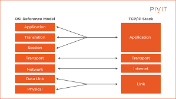

TCP/IP is a set of communication protocols that define how data is transmitted and received over the Internet and other networks.
TCP (Transmission Control Protocol) breaks data into small packets and ensures they all arrive at the destination correctly and in order. IP (Internet Protocol) handles the addressing and routing of those packets — making sure each one travels from the sender to the correct destination across the network.
TCP/IP is the foundational language of the Internet. Without it, devices would have no standard way to communicate with each other. Every email sent, webpage loaded, and video streamed relies on TCP/IP working in the background.